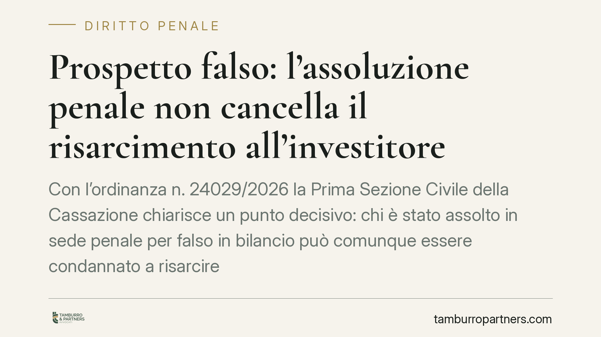

Prospetto falso: l'assoluzione penale non cancella il risarcimento all'investitore
Con l'ordinanza n. 24029/2026 la Prima Sezione Civile della Cassazione chiarisce un punto decisivo: chi è stato assolto in sede penale per falso in bilancio può comunque essere condannato a risarcire gli investitori danneggiati da un prospetto informativo inesatto. Pesa l'autonomia tra giudizio penale e civile. Una pronuncia che riapre spazi di tutela per il risparmiatore.

Il caso
La vicenda nasce da investimenti effettuati sulla base di un prospetto informativo rivelatosi inesatto. L'investitore agisce per il risarcimento del danno. La difesa oppone l'assoluzione penale già intervenuta per il reato di falso in bilancio: se il giudice penale ha escluso la responsabilità, perché condannare in sede civile?
La Prima Sezione Civile della Cassazione respinge l'obiezione. L'assoluzione penale non ha effetto automaticamente preclusivo nel processo civile di danno. I due giudizi seguono logiche diverse, applicano regole probatorie diverse e valutano fatti diversi.
Inquadramento normativo
Il riferimento centrale è l'art. 94 del Testo Unico della Finanza (D.lgs. 58/1998), che disciplina la responsabilità da prospetto. La norma impone che il prospetto contenga informazioni veritiere, complete e idonee a consentire una decisione di investimento consapevole. Chi redige o garantisce il prospetto risponde dei danni cagionati dalle informazioni false o dalle omissioni, salvo provi di aver adottato ogni diligenza allo scopo di assicurare la correttezza dei dati.
Si tratta di una responsabilità che vive di regole proprie. In sede civile la prova si fonda sul criterio del "più probabile che non": basta che la ricostruzione favorevole al danneggiato appaia più verosimile di quella contraria. In sede penale, invece, la condanna richiede la prova "oltre ogni ragionevole dubbio". È una soglia molto più alta.
Da qui l'autonomia tra i due giudizi. L'assoluzione penale può derivare dall'insufficienza della prova rispetto a uno standard severissimo, non necessariamente dall'accertata inesistenza del fatto. In quest'ultimo caso – e solo in quello – il giudicato penale può spiegare effetti nel civile. Ma l'assoluzione "per non aver commesso il fatto" o "perché il fatto non sussiste" non copre automaticamente la responsabilità da prospetto, che poggia su elementi (inesattezza informativa, nesso causale con l'investimento, danno) distinti dalla fattispecie penale del falso in bilancio.
Implicazioni pratiche
Per l'investitore la pronuncia è rilevante. Chi ha subito perdite confidando in un prospetto inesatto non vede estinguersi le proprie pretese per il solo fatto che il procedimento penale si sia chiuso con un'assoluzione. La via civile resta percorribile e segue binari propri.
Per gli emittenti, gli intermediari e i soggetti che a vario titolo intervengono nella redazione o nella garanzia del prospetto, il messaggio è altrettanto chiaro. La chiusura favorevole del fronte penale non mette al riparo dal rischio risarcitorio. La diligenza nella predisposizione delle informazioni va documentata fin da subito, perché in sede civile l'onere di provarla grava su chi ha emesso il documento.
Per gli amministratori e gli organi di controllo, infine, la decisione conferma che l'esposizione patrimoniale sopravvive all'esito penale. È un profilo da considerare anche in sede di valutazione delle coperture assicurative e delle policy di governo societario.
Cosa fare in concreto
- Investitori: verificate i termini di prescrizione dell'azione risarcitoria da prospetto. L'assoluzione penale di controparte non vi preclude la domanda civile, ma i tempi corrono comunque.
- Investitori: conservate ogni documento relativo alla decisione di investimento – prospetto, comunicazioni dell'intermediario, ordini – perché saranno la base della prova del nesso causale.
- Emittenti e intermediari: predisponete e archiviate la tracciabilità del processo di redazione del prospetto, così da poter dimostrare la diligenza richiesta dall'art. 94 TUF.
- Amministratori e sindaci: verificate l'adeguatezza delle coperture assicurative sulla responsabilità civile, tenendo conto che il rischio sopravvive all'assoluzione penale.
- In ogni caso: valutate con un legale la distinzione tra le formule assolutorie, perché solo alcune producono effetti preclusivi nel giudizio civile.
Conclusione
L'ordinanza n. 24029/2026 ribadisce un principio di sistema più che introdurre una novità: penale e civile viaggiano su binari autonomi, con regole di prova diverse. Per il risparmiatore significa che la tutela resta aperta anche dopo un'assoluzione. Per chi redige il prospetto, che la correttezza informativa va costruita e documentata a monte, non sperata a valle.
Contributo informativo a cura di Tamburro & Partners - Avv. Giuseppe Tamburro. Non costituisce parere legale.
Ogni condominio ha una storia a sé.
Se gestisci un'amministrazione e vuoi un confronto su una specifica questione condominiale, scrivi allo studio. Ti rispondiamo entro un giorno lavorativo.